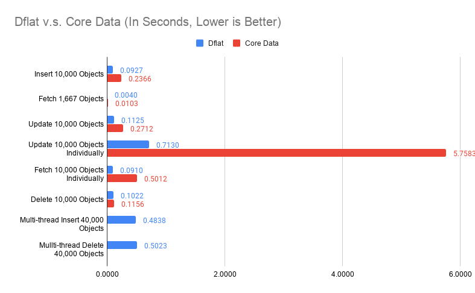
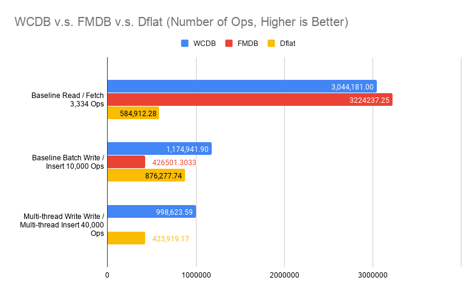
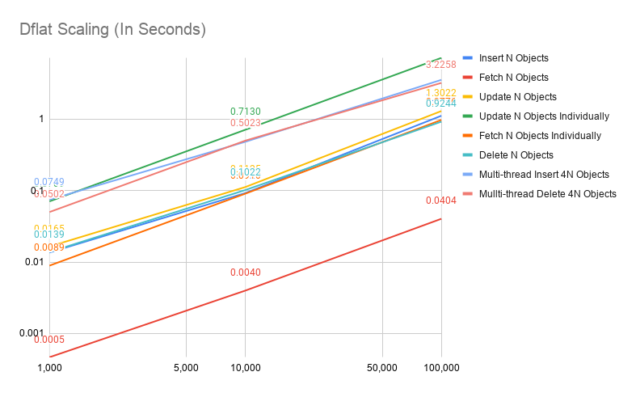
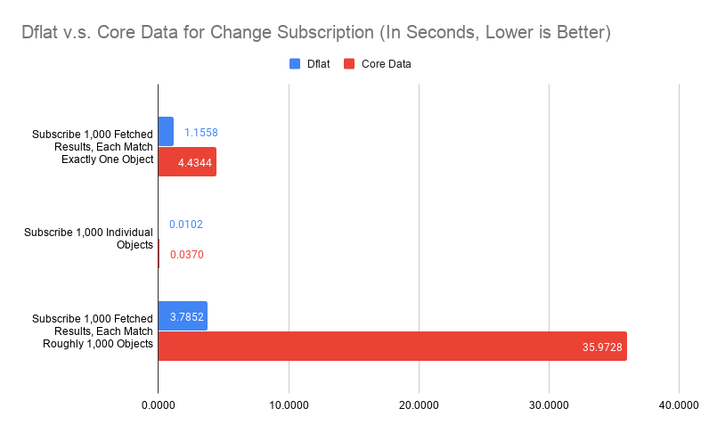

Benchmark¶
Benchmark on structured data persistence system is notoriously hard. Dflat won't claim to be fastest. However, it strives to be predictable performant. What that means is there shouldn't be any pathological cases that the performance of Dflat degrades unexpectedly. It also means Dflat won't be surprisingly fast for some optimal cases.
Following data are collected, and can be reproduced from:
./focus.py app:Benchmarks
I compared mainly against Core Data, and listed numbers for FMDB and WCDB from WCDB Benchmark (from v1.0.8.2) to give a better overview of what you would expect from the test device.
The test device is a iPhone 11 Pro with 64GB memory.
A Disclaimer: you should take a grain of salt for any benchmark numbers. These numbers I presented here simply to demonstrate some pathological cases for frameworks involved. It shouldn't be taken out of this context. In practice, structured data persistence systems rarely are the bottle-neck. It is more important to understand how you use it rather than what's the raw numbers in a light-workload device looks like.
The code for app:Benchmarks was compiled in Release mode (--compilation-mode=opt) with -whole-module-optimization on. The WCDB Benchmark was compiled in Release mode whatever that means in their project file.
The benchmark itself is not peer-reviewed. In some cases, it represents the best case scenarios for these frameworks. In other cases, it represents the worst case scenarios. It is not designed to reflect real-world work-load. Rather, these benchmarks designed to reflect the framework's characteristics under extreme cases.
CRUD¶
First, we compared Dflat against Core Data on object insertions, fetching, updates and deletions. 10,000 objects are generated, with no index (only title indexed in Core Data).
Fetching 1,667 Objects evaluated both frameworks on querying by non-indexed property.
Update 10,000 Objects Individually evaluated updating different objects in separate transactions 10,000 times.
Fetching 10,000 Objects Individually evaluated fetching different objects by title (indexed in Core Data and is the primary key in Dflat) 10,000 times.
These are obviously not the best way of doing things (you should update objects in one big transaction, and fetch them in batch if possible), but these are the interesting pathological cases we discussed earlier.
A proper way of doing multi-thread insertions / deletions in Core Data are considerably more tricky, I haven't got around to do that. The Multi-thread Insert 40,000 Objects and Multi-thread Delete 40,000 Objects are only for Dflat.

Some of these numbers looks too good to be true. For example, on insertions, Dflat appears more than twice as fast as Core Data. Some of these numbers didn't make intuitive sense, why multi-thread insertions are slower? Putting it in perspective is important.

The chart compared against numbers extracted from WCDB Benchmark (v1.0.8.2) without any modifications. It compares ops per seconds rather than time spent fetching 33,334 objects. Note that in WCDB Benchmark, Baseline Read did fetch all, which is the best case scenario in SQLite. It also compares a simple table with only two columns, a key and a blob payload (100 bytes).
Multi-thread writes is indeed slower in our ideal case, because SQLite itself cannot execute writes concurrently. Thus, our multi-writer mode really just means these transaction closures can be executed concurrently. The writes still happen serially at SQLite layer. It is still beneficial because in real-world cases, we spend significant time in the transaction closure for data transformations, rather than SQLite writes.
The ceiling for writes is much higher than what Dflat achieved. Again, WCDB represents an ideal case where you have only two columns. Dflat numbers in real-world would also be lower than what we had here, because we will have more indexes and objects with many fields, even arrays of data.
Since Dflat doesn't introduce any optimizations for batch operations, it shouldn't be a surprise that Dflat performance scales linearly w.r.t. dataset size, as the follow chart will show.

Change Subscription¶
Every framework has slightly different design for how changes subscription works. Core Data implements this in two ways: NSFetchedResultsController delegate callbacks, and NSManagedObjectContextObjectsDidChange. From developer's perspective, NSFetchedResultsController can be interpreted as counter-part for FetchedResult subscription on Dflat side. Both supports making SQL-like queries and sending updates for the result set. You can build the Dflat object subscription mechanism in Core Data based on NSManagedObjectContextObjectsDidChange notification. For the purpose of being objective, I will simply observe the latency for NSManagedObjectContextObjectsDidChange notification when compare these two, assuming the underlying delivery to individual object subscription is a no-op.
There are three parts of the benchmark:
-
Subscribe changes to 1,000 fetched results, each observe exactly one object (fetched by the primary key). Subsequent transaction will update 10,000 objects, including these subscribed 1,000 objects. Measuring the latency from when saved, to the time when updates delivered. For Core Data, a child context of viewContext was set up, and the latency was measured before saving the child context, to the time it is delivered. This should be before data persisted (
viewContext.save()was called after child context saved). On Dflat side, this happens after data persisted. -
Subscribe changes to 1,000 fetched objects. Subsequent transaction will update 10,000 objects, including these subscribed 1,000 objects. Measuring the latency from when saved, to the time when updates delivered. For Core Data,
NSManagedObjectContextObjectsDidChangewas subscribed for theviewContextobject. It measures the latency from before saving the child context, to the time notification was delivered. -
Subscribe changes to 1,000 fetched results, each observe around 1,000 objects (fetched by a range query). Subsequent transaction will update 10,000 objects, rotate all objects in each fetched results, while maintaining 1,000 objects per result. The measurement setup on Core Data is the same as 1.

The number for both fetched results observation, especially on case 1, represents the most pathological case of them all. It is particularly troublesome for Dflat because fetching 1,000 objects from disk individually would take around 20 milliseconds. Thus, if we would take SQLite.swift approach of identifying whcih table changed and simply refetch every query on that table, we could end up more performant. Although for case 3, refetching from disk would definitely be slower (close to 6 seconds for 1,000 queries, each with 1,000 objects).
From the benchmark, Core Data suffered similar problem, while being worse. Again, this is a extreme case. For mobile apps, you should only have handful of query subscriptions, with probably at most thousands of objects for each query, and unsubscribe changes as you navigate away to other pages. These extreme cases hardly realistic, you are not going to see 35-second stutter from Core Data just because there are 10,000 objects updated and you happen to have 1,000 table views need to be updated. In reality, subscribe to individual queries by primary key seems to be a big no-no. If you want to observe individual object, you should just subscribe individual object as case 2 shows.
However, it does expose that our message-sorting-and-delivery mechanism not working as efficiently as we expected. Fundamentally, Dflat's change subscription works best with incremental changes, because we evaluate every changed objects against all fetched request subscriptions related to that object. This design avoids trip to the disk on every transaction, but also relies on a reasonable implementation to evaluate every changed objects efficiently.
A quick test shows that looping over 10,000 objects with 1,000 string equality evaluation in Swift takes about 30 milliseconds. Profile shows majority time was spent on objects retain / release and function calls for Swift runtime. There are two ways to improve:
-
Current evaluation relies on Swift protocol with associated types. It seems certain Swift usage has higher runtime cost than others. Switching to a better linear scan, either with a interpreted VM or simply optimizing the evaluation procedure, would probably show 5 to 10x improvements.
-
Algorithmically, it can be improved. Current implementation is naive in a way that we evaluate each object against each subscribed query. From the study of database implementation, we know accelerated data structures can be be helpful. Particularly, each
FieldExprin a query can be used to build a sorted set,Comparablequeries can be accelerated with these sorted sets.
Both are quite doable, while each has its own challenges. For 1, we need to wrestling with Swift runtime, and its behavior can be erratic at times for obvious gains to be possible. Because I am not intended to delegate parts to C, it makes all harder. For 2, while it is not hard to implement, we use 3-value logic internally (to support isNull / isNotNull queries), that means for every turn, we need to sort with UNKNOWN. Having a robust and correct such implementation means to have much more unit tests to feel comfortable. We also need to balance when to linear scan and when to use accelerated data structures because for small number of changes, linear scan could be faster from previous empirical studies.